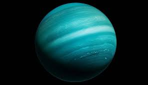

Terceiro maior planeta do sistema solar e sétimo planeta a partir do Sol, Urano é um planeta gasoso que apresenta médias de temperatura de -185°C e possui 27 satélites. Possui uma característica interessante tocante ao seu eixo de rotação com quase noventa graus em relação com o plano de sua órbita, que por sua vez é muito extensa. Dessa forma, o movimento de rotação do planeta dura 17 horas aproximadamente, enquanto o movimento de translação dura cerca de 84 anos terrestres.